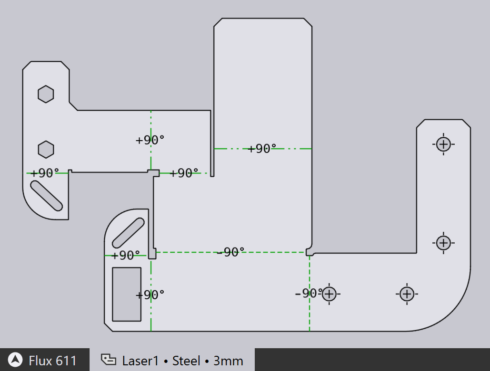
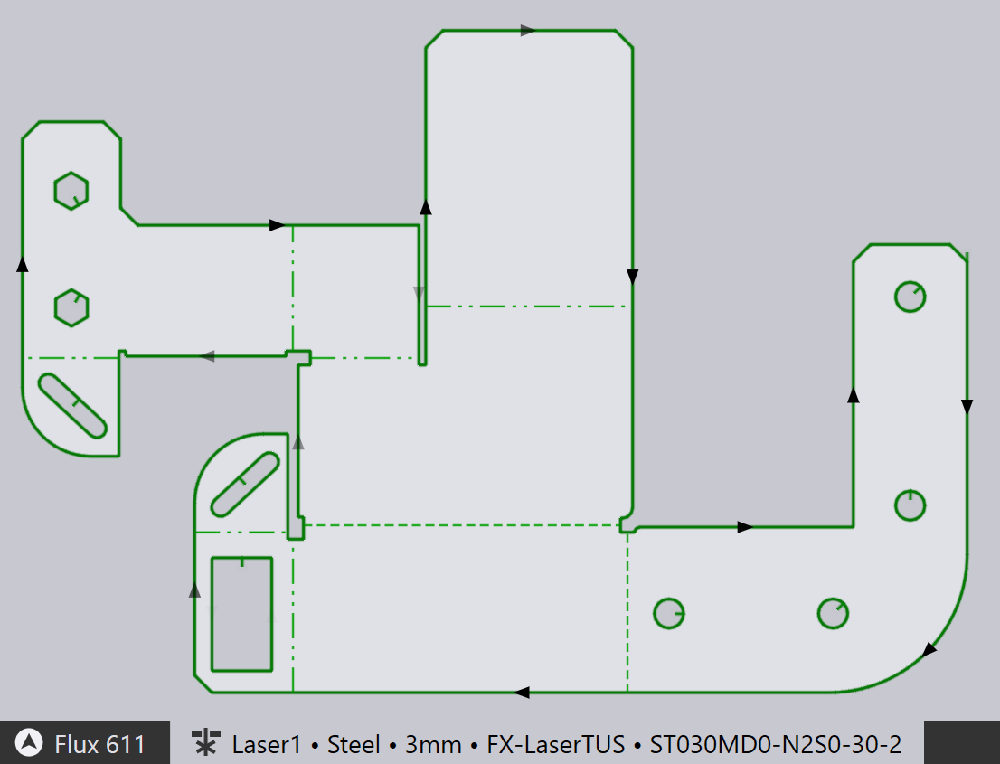
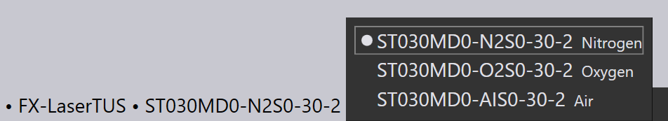
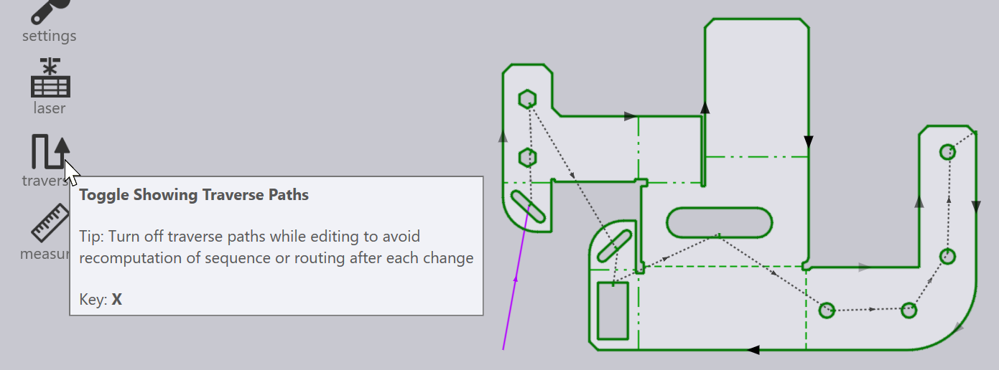
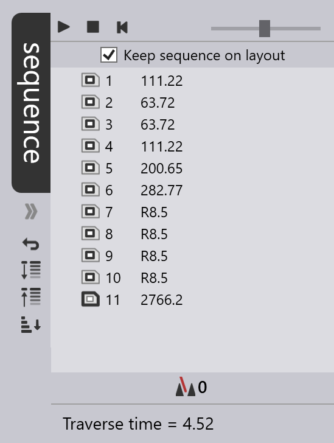

Part workflow
You can create Cut Technology Data for a sheet-metal part using the Cut module. Let us assume you have already installed a machine, and that you have imported a CAD part (2D or 3D), cleaned it up to get a usable sheet metal part. You can click on the material name and the sheet thickness in the document tab at the bottom to edit those, as explained in the 2D-Cleanup page.

Switching to Cut CAM
Now, the part can be tooled up for laser cutting by just pressing the L key. The part is tooled up with the default laser machine, which is the laser machine that was most recently used. The cutting paths, approach segments, corner processing and tooling sequence are all set up and you should see a result like this:

The tab at the bottom shows that the part has been tooled up for the FX-LaserTUS machine, and uses the LTT (laser technology table) ST030MD0-N2S0-30-2.
-
You can tool up the part for a different machine by clicking on the machine name and selecting a new machine.
-
You can select a different LTT from among the ones available for the selected machine, material and thickness by clicking on the LTT name and selecting a different one:

| See also the the Workflow panel, which can be accessed by pressing the W key. This provides more control over creating cut technology data, and also options for routing the part through bending, and nesting. |
Sequence navigator
The auto-tooler also computes a sequence in which the laser cuts for the part should be processed. This same intra-part sequence can also be used when the part is inserted into a layout along with other parts. You can see the traverse lines between the cuts by toggling the Traverse setting in the toolbar on the left (or by using the X key).


You can also edit the sequence by opening the Sequence navigator along the right edge of the window, by clicking on the chevron beneath the tab, or by pressing the Z key.
Each tooling item in the part has one entry in the sequence navigator, and you can re-order the tooling by moving these items around using drag-and-drop. You can also do some other operations here, such as controlling whether the head is raised before traversing to the next contour, etc.
The sequence navigator is discussed in more detail in the Layout Sequencing page, where we use the navigator to view and edit the sequence for an entire layout (sheet with multiple parts).